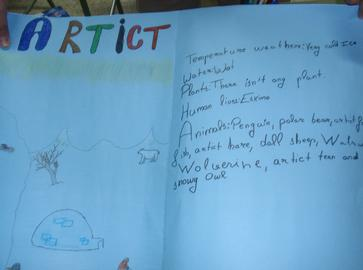
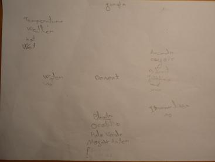
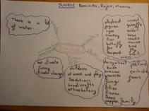
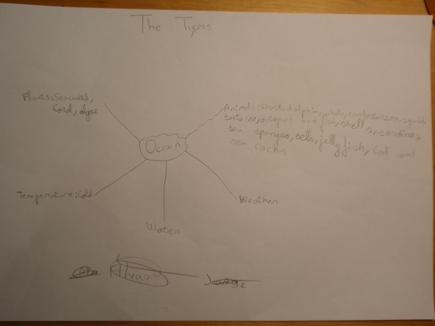
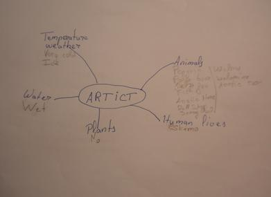

my students have worked in groups, we made all together a brainstorming with their ideas about the different habitats. then, they worked focused in the habitat ellected. they used diferent kinds of resources in other to obtain information, the final result were mind maps, these are some of them:
for the students:SELF EVALUATION SHEET
my students have worked in groups, we made all together a brainstorming with their ideas about the different habitats. then, they worked focused in the habitat ellected. they used diferent kinds of resources in other to obtain information, the final result were mind maps, these are some of them:
    